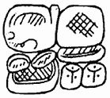

Home Page
F.A.Qs
Statistical Charts
Past Contests
Scheduled Contests
Award Contest
| Online Judge | Problem Set | Authors | Online Contests | User | ||||||
|---|---|---|---|---|---|---|---|---|---|---|
| Web Board Home Page F.A.Qs Statistical Charts | Current Contest Past Contests Scheduled Contests Award Contest | |||||||||
|
Language: K’ak’-u-pakal and Mayan Script
Description  When scientists re-discovered ancient Mayan cities, they found many texts, written in unknown script. An example of the script is shown on the right, where the name of K’ak’-u-pakal, a military leader and priest in ancient Mayan city of Chichén Itzá, is written (see A. W. Voss, H. J. Kremer, K’ak’-u-pakal, Hun-pik-tok’ and the Kokom for details). This hieroglyph can be found in many sites of the city. Mayan hieroglyphs are not hieroglyphs in proper sense, but compositions of separate glyphs. All known glyphs (there is about one thousand of them) are indexed with numbers from 1 to 9999. A special language for encoding glyphs relative positions made it possible to write any hieroglyph in plain text. For example the above K’ak’-u-pakal hieroglyph is encoded as “((669:604).(586:(27:[(534.534)])))”. Here is the formal grammar of the language (adapted for the contest):
The hieroglyph encoding describes a process of the hieroglyph composition. Glyphs are combined horizontally or vertically (using ‘.’ or ‘:’) into blocks, which in turn are combined into larger and larger blocks, until the necessary configuration is achieved. It took a hundred years to decipher Mayan hieroglyphs and convert them into plain text, but we hope that you can create a program for the backward conversion (text to hieroglyph layout) much quicker. Input The first line of the input file contains a space-free text string (255 symbols at most), containing Mayan hieroglyph encoded in plain text form. Output Output text, composed of characters ‘+’, ‘-’, ‘|’, ‘ ’ (ASCII codes 43, 45, 124, 32), ‘0’..‘9’ and line feeds. All blocks of a group should have exactly the same size, except the block with square braces around it (there will be one such block per group at most) which should be exactly two times wider (or higher if the group is vertical). The glyph id (with one leading and one trailing space) should be placed at the upper left corner of the block. The output should be as short as possible. It’s guaranteed that for each test there exists a proper layout, which has Sample Input ((669:604).(586:(27:[(534.534)]))) Sample Output +-----------+-----------+ | 669 | 586 | | | | | | | | | | | | | +-----------+-----------+ | 604 | 27 | | +-----+-----+ | | 534 | 534 | | | | | | | | | +-----------+-----+-----+ Source Northeastern Europe 2007, Northern Subregion |
[Submit] [Go Back] [Status] [Discuss]
All Rights Reserved 2003-2013 Ying Fuchen,Xu Pengcheng,Xie Di
Any problem, Please Contact Administrator